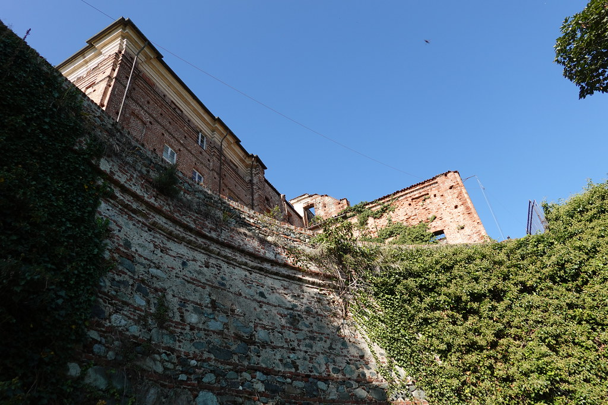
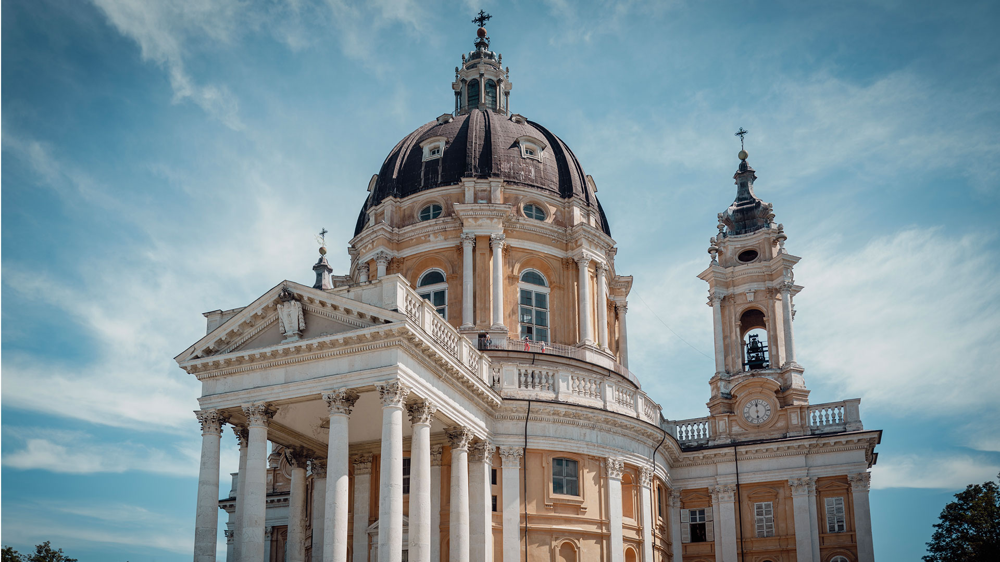
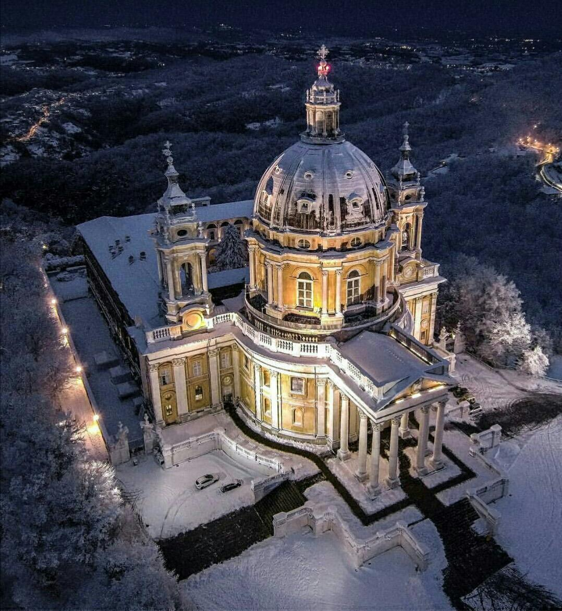
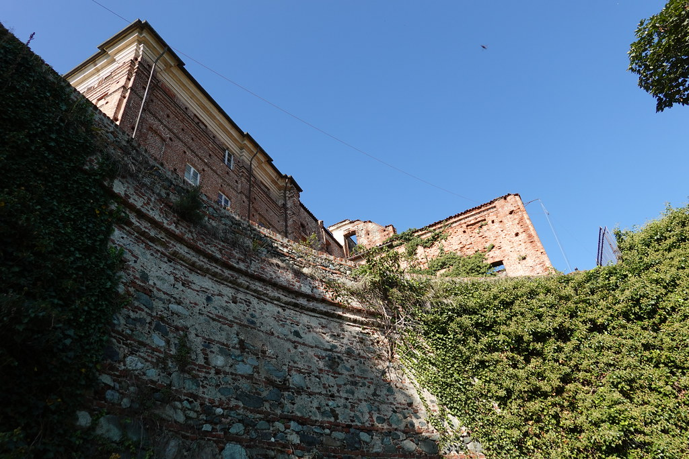
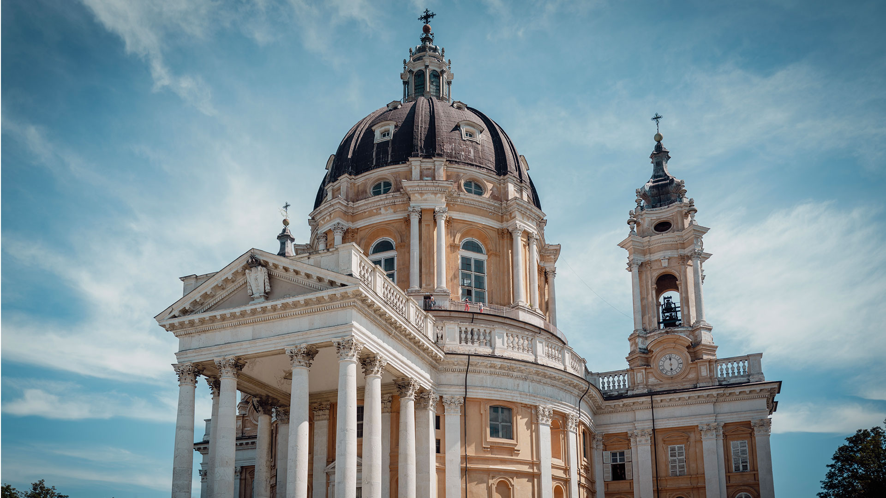
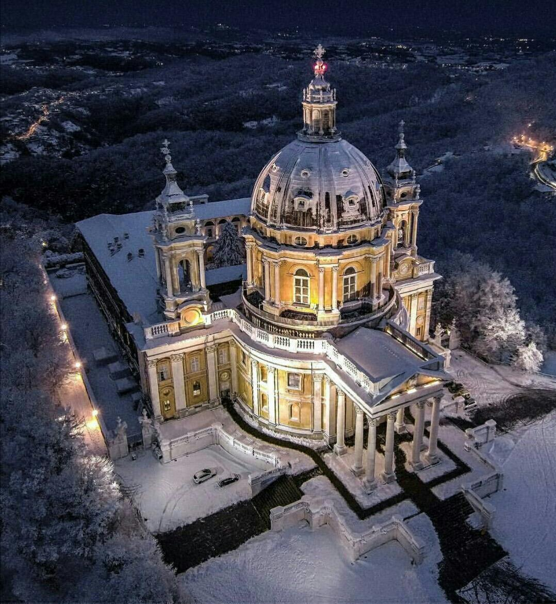

BASILICA DI SUPERGA
Torino dombjainak ékköve
A Basilica di Superga Torino felett, egy domb tetején álló barokk bazilika. II. Viktor Amadé király fogadalmi templomaként épült a 18. században.
A hegytetőről tiszta időben belátni az egész várost, sőt az Alpok csúcsait is. A bazilikába fogaskerekű vasút és gyalogösvény is vezet.
Belül a Savoyai-ház királysírjai találhatók, a kupolából pedig lenyűgöző körpanoráma nyílik. Ez az egyik legszebb kilátópont Torinóban.
 




